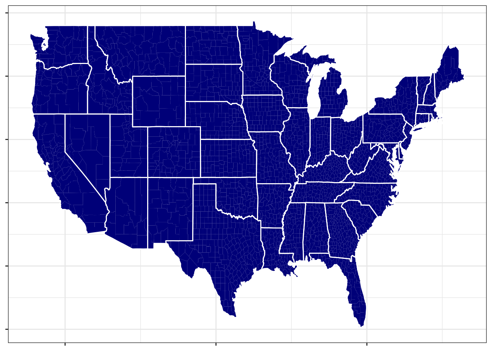
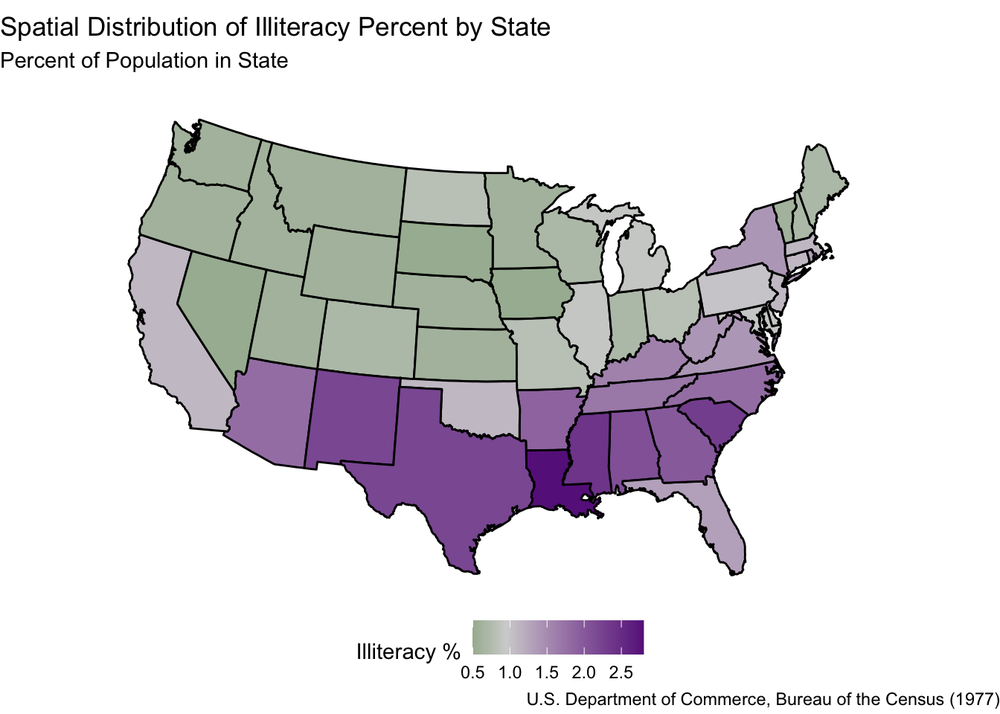
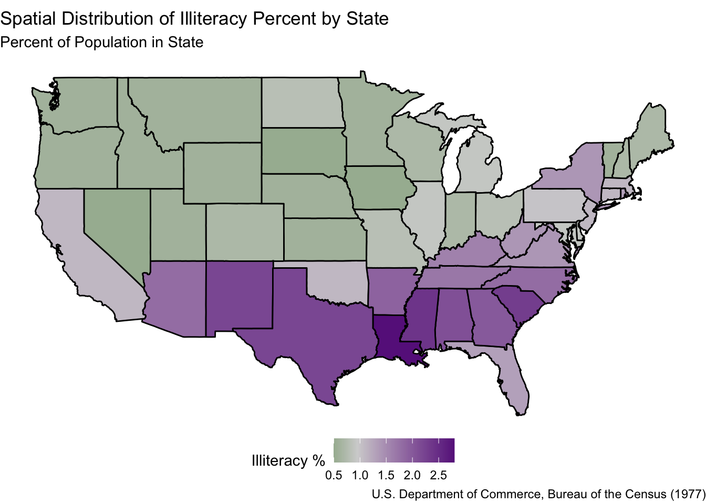
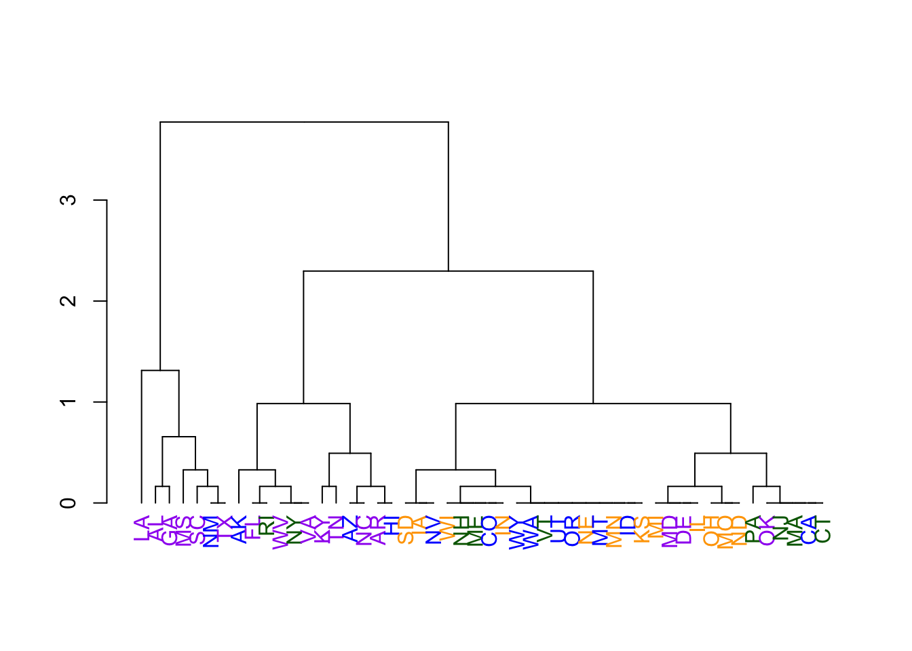
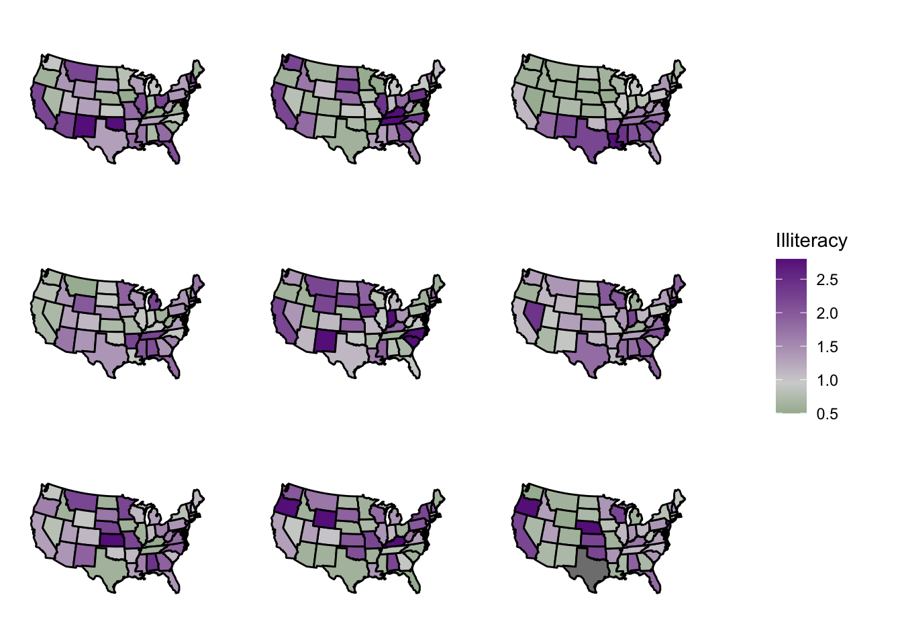
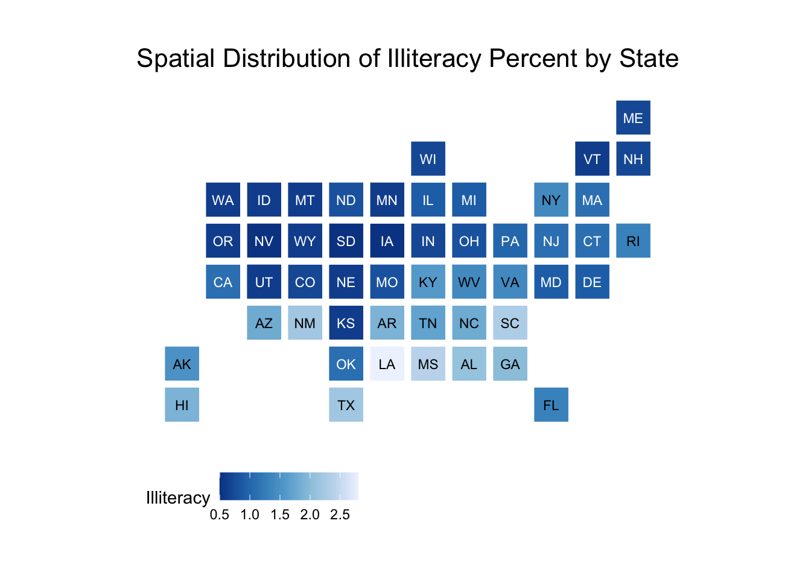
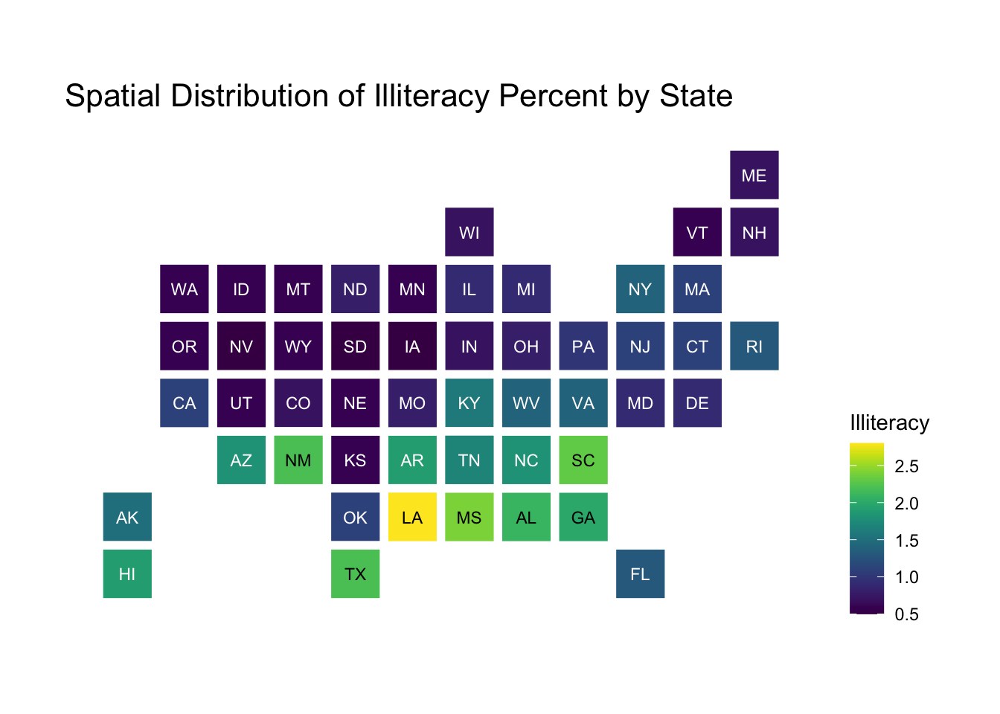

What is a polygon? I know this is getting back to elementary school stuff, but in short, a polygon is a shape consisting of a finite number of edges to form an enclosed space. Geographic borders making up regions like countries, states, counties, etc., can be envisioned as very complex polygons.
Plotting spatial objects with geom_polygon()
In ggplot(), polygons are just another geometry, making it really easy to add geographic shapes (e.g. corresponding to countries, states, counties, etc.) to maps. The following code makes a county-level map of the US by utilizing the geom_polygon() function. This function just needs a set of latitude and longitude coordinates and the group that each of these coordinates belongs to. Each group corresponds to a polygon, and the individual latitude and longitude coordinates (many of which will belong to the same group) can be “connected together” to make a polygon. For example, for the state of Michigan, there are two groups, because it consists of two different polygons.
library(tidyverse)library(ggmap)us_data <-map_data("state")county_data <-map_data("county")#For reference, this is what us_data looks like:head(us_data)
long lat group order region subregion
1 -87.46201 30.38968 1 1 alabama <NA>
2 -87.48493 30.37249 1 2 alabama <NA>
3 -87.52503 30.37249 1 3 alabama <NA>
4 -87.53076 30.33239 1 4 alabama <NA>
5 -87.57087 30.32665 1 5 alabama <NA>
6 -87.58806 30.32665 1 6 alabama <NA>
us_county_map <-ggplot() +#this creates all of the countiesgeom_polygon(aes(long, lat, group = group), fill ="darkblue", size =4, data = county_data) +#this draws outlines for the statesgeom_polygon(aes(long, lat, group = group), color ='white', fill =NA, data = us_data) +theme_bw() +theme(axis.text =element_blank(), axis.title =element_blank())us_county_map

In what follows, we’ll demonstrate how you can plot state-specific data (i.e., areal data, where each subject is a state). The workflow generalizes to other regions (e.g., maybe you want to plot country-specific data, county-specific data, etc.)
The workflow will be as follows:
Get state boundaries (i.e., the latitude and longitude information at the state level).
Get state-specific data. For example, we will use the state.x77 dataset in the datasets package, which contains information about each of the 50 United States in the 1970s. (Despite its name, none of the data is from 1977. See help(state.x77) for more details.)
Match the data from the the second bulletpoint to the data from the first bulletpoint (i.e., connect the state-specific data with the state boundary data).
Plot the data.
First, let’s get the state boundaries. (We actually did this earlier when making our US map above, but we’ll do it again here for demonstration.)
# Get state borders from ggmap package and mapslibrary(maps)
Warning: package 'maps' was built under R version 4.2.3
Attaching package: 'maps'
The following object is masked from 'package:purrr':
map
We’ll need to do a minor amount of data manipulation to match the state.x77 dataset to the state_borders dataset. First, note that state.x77 technically doesn’t have a column with the state names; instead, its rownames correspond to the state names. So, first we’ll have to create a column with the state names. Second, the names within state_borders are all lowercase (see above), so we’ll need to take that into account with matching the two datasets as well.
The following code first grabs the rownames of the state.x77 table, then converts state.x77 to a tibble named state_data, and then adds that column with the state names and makes them lower case:
Now we can match our two datasets using left_join():
# join state_data data to state_bordersstate_borders <- state_borders |>left_join(state_data, by =c("region"="state"))#Note that we now have the information from state_data inside#our state_borders dataset:head(state_borders)
Finally, we can make a plot of the state-specific data (in this case we focus on the illteracy rate by state in 1970). To do this, we just specify a fill within the geom_polygon() function. It’s also helpful to use the scale_fill_gradient2() function to denote what the colors should be for this fill (below, we set the midpoint within this function equal to the median of the variable we are plotting, which is common practice).
Important: If you do this (set the midpoint equal to the median), remember that you are forcing half the regions in your map to have “high value” colors and half the regions in your map to have “low value” colors. Furthermore, when looking at maps like the ones below, you should always keep the scale in mind. For example, there seems to be a distinction between the southern and northern US: They tend to be different colors. Ultimately, though, this difference corresponds to a 1-2% difference in illiteracy rates; we would need to (ironically) read up on illiteracy rates to better understand if this is a scientifically meaningful difference.
# Make the plot! # Before running the following code, you need to have the `mapproj` package# install.packages("mapproj")# (Change the fill variable below as you see fit)# (Change the color gradient as you see fit)ggplot(state_borders) +geom_polygon(aes(x = long, y = lat, group = group,fill = Illiteracy), color ="black") +scale_fill_gradient2(low ="darkgreen", mid ="lightgrey", high ="darkorchid4", midpoint =0.95) +theme_void() +coord_map("polyconic") +labs(title ="Spatial Distribution of Illiteracy Percent by State",subtitle ="Percent of Population in State",caption ="U.S. Department of Commerce, Bureau of the Census (1977)",fill ="Illiteracy %" ) +theme(legend.position ="bottom")

Use coord_map() to specify your map projection
In the above code, note that we have the line coord_map("polyconic"). This specifies a certain kind of map projection for our plot. We can consider other projections. For example, an old-school projection we discussed in lecture was the Mercator projection. The below map is the same map as above, but with the Mercator projection.
ggplot(state_borders) +geom_polygon(aes(x = long, y = lat, group = group,fill = Illiteracy), color ="black") +scale_fill_gradient2(low ="darkgreen", mid ="lightgrey", high ="darkorchid4", midpoint =0.95) +theme_void() +coord_map("mercator") +labs(title ="Spatial Distribution of Illiteracy Percent by State",subtitle ="Percent of Population in State",caption ="U.S. Department of Commerce, Bureau of the Census (1977)",fill ="Illiteracy %" ) +theme(legend.position ="bottom")

Note that the coord_map() function is specifying the coordinates of our map.
Unfortunately, some popular projections (like the Robinson projection and the Winkel Tripel projection) are not readily available. It’s a little bit annoying to get these projections working in R, but it can be done: See this tutorial. There isn’t one “right” projection, but some are better than others.
Statistical Analyses for Areal Data
In the illiteracy map above, it seems like there is a higher illiteracy rate in the southern US than in the northern US, but is this difference significant? There are two visual ways that we can assess this: One is with dendrograms (which we have already learned) and another way is with what we call “visual randomization tests.”
Dendrogram of States
If it seems like outcomes tend to cluster geographically (as in the graph above), then automated clustering techniques like hierarchical clustering should be able to pick up geographic clusters. To put it another way: If techniques like hierarchical clustering identify that certain geographic areas have similar outcomes, then there is a strong case to be made that indeed outcomes are clustering geographically.
To verify areal graph results with dendrograms, you can follow this workflow:
Make an areal graph of outcomes (as we did above for illiteracy rates).
Using your eyes, identify geographic regions that appear to have similar outcomes. For example, in the graph above, we can broadly identify two clusters: The south and the north.
Run hierarchical clustering on your data. When doing this, use the outcome (in this case, illiteracy rates) to measure the “distance” between geographic subjects (in this case, states).
Make a dendrogram, and color the leaves of the dendrogram by the geographic regions you identified in the second bulletpoint. If the geographic regions tend to cluster together according to the dendrogram, this suggests that, indeed, outcomes are clustering geographically.
Below is the code to implement this workflow for the illiteracy example. We already completed the first two bulletpoints above, so now we just need to do the last two bulletpoints (below).
# Remember that we have to scale our data when creating dendrogramsillit_scaled <- state_data$Illiteracy /sd(state_data$Illiteracy)# distance matrix for our datasetillit_dist <-dist(illit_scaled)# run hierarchical clusteringillit_hc <-hclust(illit_dist, method ="complete")# convert to a dendrogram type objectillit_dend <-as.dendrogram(illit_hc)#We'll need the following library to make the dendrogram#more graphically pleasing:library(dendextend)
---------------------
Welcome to dendextend version 1.17.1
Type citation('dendextend') for how to cite the package.
Type browseVignettes(package = 'dendextend') for the package vignette.
The github page is: https://github.com/talgalili/dendextend/
Suggestions and bug-reports can be submitted at: https://github.com/talgalili/dendextend/issues
You may ask questions at stackoverflow, use the r and dendextend tags:
https://stackoverflow.com/questions/tagged/dendextend
To suppress this message use: suppressPackageStartupMessages(library(dendextend))
---------------------
Attaching package: 'dendextend'
The following object is masked from 'package:stats':
cutree
# first, let's change the labels according to the state abbreviations# (which is available in the datasets library, which we loaded earlier)illit_dend <-set(illit_dend, "labels", state.abb, order_value = T)#We will also color the labels by the region of the state.table(state.region) # this comes from the datasets package hence why we didn't load it
state.region
Northeast South North Central West
9 16 12 13
stat_region_colors <-ifelse(state.region =="Northeast", "darkgreen",ifelse(state.region =="South", "purple",ifelse(state.region =="North Central", "orange","blue")))#Set the leaf labels according to the above colors:illit_dend <-set(illit_dend, "labels_colors", stat_region_colors, order_value = T)# plot the dendrogramplot(illit_dend)

As we can see, many of the southern states tend to cluster together. Meanwhile, the other clusters are fairly heterogeneous in terms of regions of the US. Thus, it appears that southern states tend to have more similar illiteracy rates (in this case, higher rates) than other parts of the US.
Visual Randomization Tests
In the above graph, we want to assess if illiteracy rates tend to depend on geography. So, consider the null hypothesis that illiteracy rates do not depend on geography. If the null hypothesis is true, what are the chances that our map just “happened” to look like the map above?
To answer this question, we will use a visual randomization test. The workflow for a visual randomization test is as follows:
Make an areal graph of outcomes (as we did above for illiteracy rates).
Shuffle the outcomes randomly a few times (e.g., 8 times). Make a new areal graph for each of these shuffles. (In short, you’re taking the colors of your original graph and just shuffling them around the different geographic regions on the map.)
Plot your original map along with all of the “shuffled” graphs, and show your graphs to someone else. Tell them that one graph is the “real graph” and the rest are “random graphs.” Can they tell which graph is the real graph? If so, then the graph we have is “significantly non-random” in terms of geography.
Below is the code to implement this workflow for the illiteracy example. We already completed the first bulletpoint, so now we just need to do the last two bulletpoints (below).
# It'll be helpful to write a function that automatically makes a ggplot for us.# This is literally the same code we used to generate the original areal map above, but for any dataset called "state_data".get_state_map_illit <-function(state_data){ plot <-ggplot(state_data) +geom_polygon(aes(x = long, y = lat, group = group,fill = Illiteracy), color ="black") +scale_fill_gradient2(low ="darkgreen", mid ="lightgrey", high ="darkorchid4", midpoint =0.95) +theme_void() +coord_map("polyconic")return(plot)}# Now we're going to permute (i.e., "shuffle") the outcomes a few times. # number of randomizations/permutations/shuffles:n_shuffles <-9# It's helpful to store ggplot objects in lists in R.# We haven't talked much about lists in this class, but they# are quite flexible and easy to use.# For example, we're going to create an object called plot_list.# plot_list[[1]] refers to the first object in the list,# plot_list[[2]] refers to the second object in the list,# and so on.plot_list <-list(length = n_shuffles)# Will use a for loop to do thisfor(i in1:n_shuffles){#create a "randomized" dataset state_borders_rand <- state_borders#shuffle the outcomes state_borders_rand$Illiteracy <-sample(state_borders_rand$Illiteracy)#create the plot and store it plot_list[[i]] =get_state_map_illit(state_borders_rand)}# Could have also do the following for those that don't like for loops... (even# though this is still a for loop but calling compiled code underneath)# plot_list <- lapply(1:nshuffles, # function(i) {# state_borders_rand <- state_borders# # shuffle the outcomes# state_borders_rand$Illiteracy <- sample(state_borders_rand$Illiteracy)# # Return the plot # get_state_map_illit(state_borders_rand)# })# pick a random entry of plot_list to be the "real" plotplot_list[[sample(1:n_shuffles, size =1)]] =get_state_map_illit(state_borders)# Plot all the plots together using the cowplot package:# install.packages("cowplot")library(cowplot)
Warning: package 'cowplot' was built under R version 4.2.3
Attaching package: 'cowplot'
The following object is masked from 'package:ggmap':
theme_nothing
The following object is masked from 'package:lubridate':
stamp
Because it’s really annoying to have all of the legends displayed together, we can use the cowplot package to display a single legend below each of these maps. First, we grab a legend using the get_legend() function:
# Grab the legend for just the first plot, since they are all the samemap_legend <-get_legend(plot_list[[1]])
Warning in get_plot_component(plot, "guide-box"): Multiple components found;
returning the first one. To return all, use `return_all = TRUE`.
Next, we are going to update our plot_list so that the legends are removed from each of them. We can do this quickly using the lapply() function:
And finally, we will now use multiple plot_grid function calls to display the shuffled maps next to the legend:
plot_grid(plot_grid(plotlist = legend_free_plot_list, ncol =3), map_legend, ncol =2,# Adjust so the maps are much larger:rel_widths =c(4, 1))

If you can spot which plot is the real plot (without having seen it previously!!), then illiteracy rates are significantly non-random across geography.
An alternative to state-level choropleths, we can instead make state-level bins using the statebins package.
library(statebins)# Need to capitalize the first letter of the state_data data to use for this (or# get the abbreviations - that would work as well). We can use the str_to_title# function from the stringr package loaded in the tidyversestate_data$new_state <-str_to_title(state_data$state)statebins(state_data = state_data, state_col ="new_state",value_col ="Illiteracy") +labs(title ="Spatial Distribution of Illiteracy Percent by State") +theme_statebins()

We can customize this in different ways like other ggplot objects:
statebins(state_data = state_data, state_col ="new_state",value_col ="Illiteracy",# Use the viridis scaleggplot2_scale_function = viridis::scale_fill_viridis) +labs(title ="Spatial Distribution of Illiteracy Percent by State") +# Move legend to righttheme_statebins("right")

Additional resources
Check out the geofacet package for arranging plot panels in a similar way to statebins except each bin is a plot!
The sp package used be a popular package to work with map data, but now it’s been replaced by the sf package